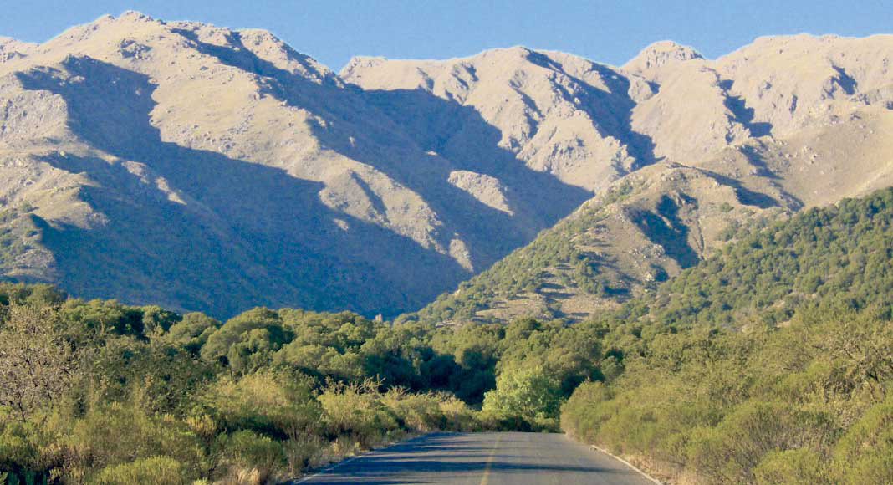
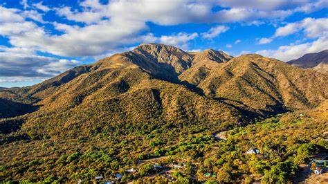
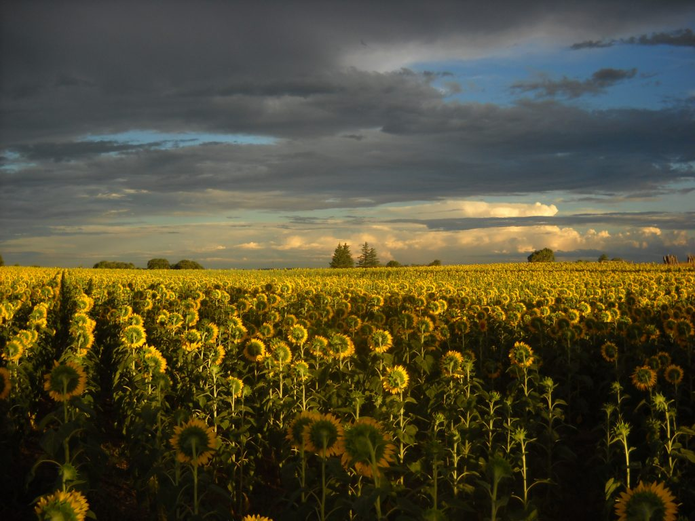

En el corazón de Argentina, el paisaje del centro del país ofrece una rica diversidad de entornos naturales
y culturales.
Las Sierras de Córdoba, con su belleza escarpada y su vegetación exuberante, son un destino popular para los
amantes de la
naturaleza y los deportes al aire libre. Además de sus impresionantes vistas panorámicas, las sierras
albergan encantadoras
localidades serranas donde los visitantes pueden disfrutar de la tranquilidad y la hospitalidad de la vida
rural.
Por otro lado, la Pampa Húmeda, que se extiende por gran parte de la región central, es el corazón agrícola
de Argentina.
Aquí, los campos de cultivo se extienden hasta donde alcanza la vista, con cultivos de maíz, soja y trigo
que alimentan tanto
al país como a gran parte del mundo. La ganadería también juega un papel importante en esta área, con
extensas estancias donde
se crían vacas, ovejas y caballos.
En la provincia de San Luis, los paisajes cambian nuevamente, ofreciendo una combinación única de valles
fértiles y sierras
imponentes. Los valles de Conlara y Traslasierra son verdaderos paraísos para los amantes del ecoturismo y
las actividades
al aire libre, con ríos cristalinos, bosques frondosos y una biodiversidad sorprendente.
Finalmente, la llanura pampeana, que se extiende por las provincias de Buenos Aires, Santa Fe y Córdoba, es
una vasta extensión
de tierras planas donde el cielo parece fundirse con el horizonte. Aquí, los pueblos pintorescos y las
estancias tradicionales
ofrecen una ventana a la vida rural argentina, donde el tiempo parece moverse a un ritmo más pausado y
tranquilo.
En resumen, el centro de Argentina es una región de contrastes y belleza incomparable, donde los paisajes
naturales
se entrelazan con la rica cultura y tradiciones de la vida rural.
San Luis es un verdadero tesoro natural en el centro argentino. En este destino, puedes explorar los hermosos valles de Conlara y Traslasierra, donde encontrarás ríos cristalinos, cascadas impresionantes y paisajes montañosos espectaculares. Además, no te pierdas la oportunidad de visitar la Reserva Natural Provincial Quebrada de San Vicente, un área protegida que alberga una increíble diversidad de flora y fauna autóctona. 
 Este destino ofrece una combinación perfecta de naturaleza y cultura. Puedes explorar sus impresionantes paisajes montañosos, como el Cerro Uritorco en Capilla del Monte, y disfrutar de actividades al aire libre como senderismo, trekking y parapente. Además, no te pierdas la oportunidad de visitar las encantadoras localidades serranas, como Villa General Belgrano, conocida por su arquitectura al estilo europeo y su festival anual de la cerveza
Aunque puede no ser tan obvio como los destinos montañosos, la Pampa Húmeda ofrece una experiencia única en el centro de Argentina. Aquí, puedes visitar las extensas estancias ganaderas y agrícolas, donde tendrás la oportunidad de aprender sobre la vida rural argentina y disfrutar de la deliciosa gastronomía local. Además, no te pierdas la oportunidad de visitar la ciudad de Rosario, ubicada a orillas del río Paraná, que ofrece una combinación perfecta de historia, cultura y paisajes ribereños impresionantes. 
Explora el Parque Nacional Sierra de las Quijadas: Este parque ofrece paisajes impresionantes con formaciones geológicas únicas y una gran diversidad de flora y fauna. Puedes hacer senderismo por sus senderos bien señalizados y disfrutar de vistas panorámicas desde sus miradores. No olvides llevar agua, protector solar y una cámara para capturar las vistas espectaculares.
Visita el Embalse La Florida: Este hermoso embalse es perfecto para actividades acuáticas como kayak, natación y pesca. También cuenta con áreas de picnic y campings si prefieres una experiencia más relajada. Rodeado de naturaleza, es un lugar ideal para disfrutar de un día al aire libre con familia y amigos.p>
Recorre el Camino de las Altas Cumbres: Este camino ofrece vistas espectaculares de las sierras y conecta el Valle de Punilla con el Valle de Traslasierra. Durante el recorrido, puedes detenerte en miradores panorámicos, visitar la Reserva Natural Quebrada del Condorito y disfrutar de la belleza natural de la región. Es ideal para realizar en coche, moto o bicicleta..
Visita el pueblo de La Cumbrecita: Este pintoresco pueblo de estilo alpino es perfecto para una escapada tranquila. Puedes hacer senderismo por sus numerosos senderos, disfrutar de cascadas y arroyos cristalinos, y relajarte en sus encantadoras cafeterías y restaurantes. La Cumbrecita es un lugar peatonal, lo que le da un ambiente único y relajado.
Explora la ciudad de Rosario: Situada a orillas del río Paraná, Rosario es una de las ciudades más importantes de la región. Puedes visitar el Monumento Nacional a la Bandera, pasear por el Parque de la Independencia y disfrutar de la vibrante vida cultural y gastronómica de la ciudad. No te pierdas un paseo por la costanera para apreciar las vistas del río y los espacios verdes.
Disfruta del ecoturismo en la Reserva Natural Otamendi: Ubicada en la provincia de Buenos Aires, esta reserva es ideal para los amantes de la naturaleza. Puedes hacer caminatas por sus senderos, observar aves y fauna autóctona, y disfrutar de un entorno natural protegido. Es un excelente lugar para desconectar y disfrutar del aire libre en la Pampa Húmeda..
"El Parque Nacional Sierra de las Quijadas en San Luis me dejó sin palabras. Las formaciones rocosas y las vistas panorámicas son impresionantes. Es un lugar perfecto para los amantes del senderismo y la fotografía.

"Visitar La Cumbrecita en las Sierras de Córdoba fue una experiencia mágica. El ambiente alpino y los senderos naturales me hicieron sentir en un cuento de hadas. ¡Definitivamente, volveré!"
"Pasar un día en el Embalse La Florida fue increíble. Hicimos kayak, nadamos y disfrutamos de un picnic con una vista espectacular. Es un lugar ideal para relajarse y disfrutar de la naturaleza."